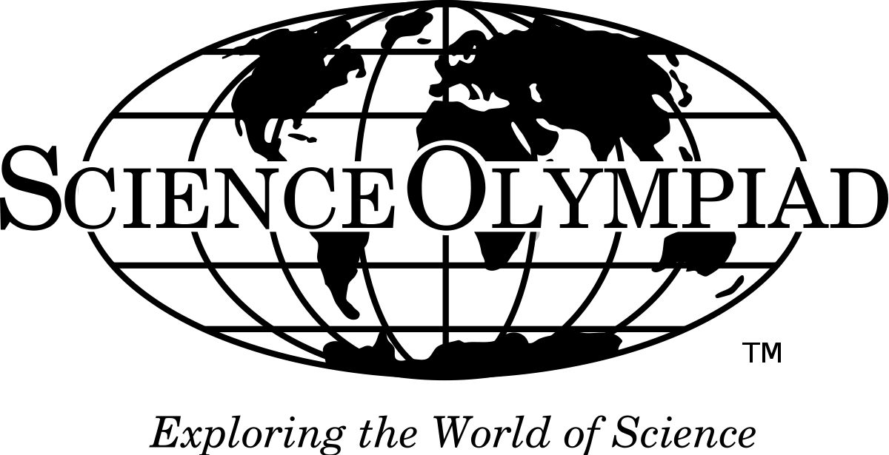

Science Olympiad is an American team-based competition that focuses on various areas of science. Consisting of 23 team events, hundreds of teams from schools across America compete to win the Nationals. There are three major tournaments: Regionals, States, and Nationals. The top 3 teams in Regionals advances to States and the top one or two (depending on the size of that state) from States advances to Nationals.
There are two different divisions when it comes to competition and topics. Division B is for middle schoolers and Division C runs through high school. The difference between these two divisions is that Division C has generally harder topics than Division B, as expected for the grade difference. Each division's topics are further divided into many groups according to what they relate to. Most people generally have three events: two normal science events and a build event of some sort. Everyone has a build event regardless of whether they have three or four events. To learn more about each topic, click here to go to the official Science Olympiad website. The topics are displayed below: